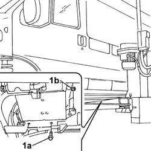
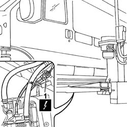
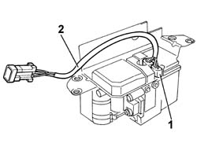

5020M92 WIRING ON ADDITIONAL HEATER - R.R.
- Path
- Procedures > 50 AUXILIARY UNITS > 5020 HEATER > 5020M SUPPLEMENTARY INDEPENDENT HEATER > 5020M92 WIRING ON ADDITIONAL HEATER - R.R.
- Kind
- repair procedure (removal / refitting; the operation number is the code)
- Applies to
- all engines; all production periods
- Interactive page
- https://sloeber94.github.io/elrnDB-fDct/en/#/244001263
Applies to: all engines; all production periods
 Removing
Removing
 Refitting
Refitting- Disconnect the negative battery terminal.
- Raise the vehicle on the lift.
1. Support the weight of the heater unit and loosen the bolts (1a) and the nuts (1b) fixing the independent heater unit mounting bracket.

Applies to: all engines; all production periods
1. Disconnect the electrical connector for the independent heater unit and release it from the mounting bracket.
Description | Connector | |
|---|---|---|
1 | Additional heater control unit | M075 |

Applies to: all engines; all production periods
1. Disconnect the electrical connections for the wiring from the independent heater.
2. Remove the wiring for the independent heater unit.

Applies to: all engines; all production periods
Refitting
Removing- Connect the electrical connectors for the heater unit wiring.
- Connect the electrical connector for the heater unit.
Description | Connector | |
|---|---|---|
- | Additional heater control unit | M075 |
- Fasten the support for the independent heater unit to the bodyshell tightening the nuts and bolts to the recommended torque.
Value - daNm | Fastening | Component | Ø | |
|---|---|---|---|---|
- | 2 | Nut | - | M8 |
Value - daNm | Fastening | Component | Ø | |
|---|---|---|---|---|
- | 2 | Bolt | - | M8 |
- Lower the vehicle on the lift.
- Connect the negative battery terminal.